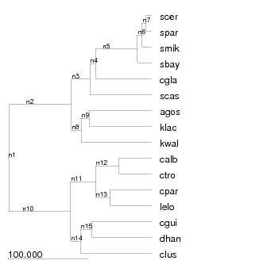
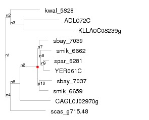

The DLCoal software package contains several programs reconciling gene trees and inferring their gene duplications and losses. The concepts and algorithms behind the main program, dlcoal_recon, are presented in our DLCoal paper. This documentation describes how to use each of the programs in the software package and defines the various file formats that are used.
For an example of how to run these programs see the examples directory (e.g. analyze-sim-flies.sh).
Note: This documentation is currently under development and will be regularly updated with more information.
dlcoal_recon is a program that takes a previously reconstructed gene tree and a species tree and produces a reconciliation, a data-structure that describes how the gene tree "fits inside" the species tree. From this data structure, one can infer gene duplications, losses, and incomplete lineage sorting. Typically, reconciliation is represented as mapping of nodes in a gene tree to the nodes and edges of the species tree. However, DLCoal uses a three-tree model (gene tree, locus tree, and species tree) to represent gene family evolution. Therefore the reconciliation data structure is more than just a single mapping. Instead it is represented as a tuple of four variables: the locus tree TL, the gene-to-locus tree mapping RG, the locus-to-species mapping RL, and the set of daughter nodes δL.
This specifies the species tree in Newick format. The branch lengths should be specified in millions of years (myr).
This specifies a gene to species map.
This specifies an effective population size Ne to use for every branch in the species tree. Branch-specific population sizes are also possible.
This specifies the rate of a gene duplication (dups/gene/myr) present throughout all branches of the species tree.
This specifies the rate of a gene loss (losses/gene/myr) present throughout all branches of the species tree.
This specifies the generation time (years) present throughout all branches of the species tree. Branch-specific generation times are also possible.
This specifies the number of search iterations to perform
This specifies the input file extension (default='') of the gene tree. This extension will be stripped from the input filename in order to determine the output file prefix "PREFIX".
This specifies the output file extension (default='.dlcoal') for all output files. Every output file will have the form "$PREFIX$OUTPUT_EXT.*" (e.g. "my_input_prefix.dlcoal.locus.recon").
This specifies the number of prescreening iterations to use in the locus tree search (default=50).
This specifies the number of samples for dup-loss integration (default=100)
This specifies the initial locus tree for search. By default the gene tree topology is used as the initial locus tree.
This specifies the seed for the random number generator. This allows one to produce deterministic results.
Outputs logging information to a log file *.log.
Displays a help message
DLCoal represents the reconciliation as a tuple of four variables: the locus tree TL, the gene-to-locus tree mapping RG, the locus-to-species mapping RL, and the set of daughter nodes δL. Each of these variables is store in one of the following four output files.
The dlcoal_sim program simulates gene trees using the DLCoal model. The program takes the following arguments:
This specifies the output directory for the simulation files.
This specifies the species tree in Newick format. The branch lengths should be specified in millions of years (myr).
This specifies the effective population size (Ne) present in every branch of the species tree.
This species the rate of a gene duplication (dups/gene/myr) present in every branch of the species tree.
This specifies the rate of gene loss (losses/gene/myr) present in every branch of the species tree.
This specifies the generation time (years) for every branch in the species tree.
This specifies the number of simulationed gene trees to create.
This specifies the minimum number of genes required per family. If a family is simulated with fewer genes (due to gene losses), the family is rejected and and re-simulated.
If given, show the help message.
dlcoal_sim will produce several simulated gene families each stored in their own directory as follows:
The base directory DATADIR is specified by the -d option and each directory FAMID is numbered between 0 and value specified by the -i option.
The tree-relations program reads from standard input a list of gene tree filenames (one filename per line) and outputs to standard output a relation file (*.rel.txt).
When given, the directory name containing the gene tree is used as the family id (column 1).
This specifies the species tree in Newick format.
This specifies a gene to species map.
This specifies the file extension of the input gene tree.
If given, this specifies the file extension of the reconciliation mapping. The reconciliation mapping file is determined by removing the tree file extension and appending the reconciliation file extension.
If given, this suppresses the species id column in the duplication columns.
If given, show the help message.
The tree-relations-cmp program takes two relation files and compares them. Specifically, the program takes two arguments:
FILE1.rel.txt should be a relation file that describes the true relationships within a gene family or series of gene families (i.e. the actual relationships determined from simulated data). FILE2.rel.txt gives the relations reconstructed by a program like dlcoal_recon. The output of the program will look something like the following:
dup actual: 46 dup pred: 49 dup sn: 0.95652173913 dup ppv: 0.897959183673 loss actual: 34 loss pred: 43 loss sn: 0.970588235294 loss ppv: 0.767441860465 orth actual: 6856 orth pred: 6758 orth sn: 0.985414235706 orth ppv: 0.999704054454
This output describes the performance of the reconciliation algorithm compared to the truth. Performance is measured for gene duplications (dup), gene losses (loss), and orthologs (orth). For each type of event or relationship, both the actual and predicted (pred) counts are reported. In addition, the sensitivity (sn) and the positive predictive value (ppv; also known as precision) are given.
Note: sensitivity = true positives / (true positives + false negatives). precision = true positives / (true positives + false positives).
Restrictions on gene IDs and species IDs. Due to the file formats that DLCoal uses, there as several restrictions on what IDs are allowed. Many of these restrictions are common for other similar phylogenetic software. The safest IDs follow these restrictions:
Space characters are discouraged from gene IDs and species IDs since they will probably cause problems with other bioinfomatic software that you may use (although DLCoal can handle spaces). Characters such as parentheses "(" ")" and colons ":" are not allowed because the newick file format uses these characters for describing the structure of the tree.
It is also easier to use gene IDs that have a prefix or suffix that indicates the species ID. For example "human_HOXC5" is a human gene. This is not a requirement, but it does make preparing a gene to species mapping file (*.smap) easier.
Species trees should be specified using the Newick file format. Beyond the newick format, DLCoal has only a few additional requirements. First, the species names given in the species tree should match those given in the SMAP file. Second, the branch lengths of the species tree should be expressed in units of time (see figure). Any unit of time can be used (e.g. millions of years, generations, relative units, etc). The only requirement is that the duplication and loss rates are also expressed in compatible units. Therefore, if branch lengths are in millions of years, the duplication rate (specified by dlcoal_recon's "-D" option) should be in units of duplications/gene/million years.
Naming ancestral nodes. DLCoal also supports naming ancestral nodes in the species tree using the newick format. For example, the parental node of human and chimp can be named primate using the following syntax:
If ancestral nodes are named, they will be used in the output of the reconciliation mapping.
(((((((scer:7.061760,
spar:7.061760
)n7:4.999680,
smik:12.061440
)n6:5.970600,
sbay:18.032040
)n5:52.682400,
cgla:70.714260
)n4:7.220700,
scas:77.934960
)n3:23.181480,
(
(
agos:78.553260,
klac:78.553260
)n9:10.434960,
kwal:88.988220
)n8:12.128400
)n2:78.883560,
(
(
(
calb:41.275620,
ctro:41.275980
)n12:29.632860,
(
cpar:52.323120,
lelo:52.323120
)n13:18.585720
)n11:31.149540,
(
(
cgui:75.615840,
dhan:75.615840
)n15:14.006880,
clus:89.622720
)n14:12.435660
)n10:77.941620
)n1;

Several parameters for DLCoal can be specified in a branch-specific way. Currently, the effective population size and generation time parameters can be configured in this way. This is done by using the comment section within the species tree newick file. The comment section has the format:
where &&NHX: must appear first followed by a series of key-value pairs each of which are separated by colons ":". One comment section can appear after every node in the newick file. For example, the following species tree has comments after every node:
(
scer:610.916819[&&NHX:g=0.9:pop=10000000.0],
(
(
cjaponica:66.116017[&&NHX:g=0.166666666667:pop=50000],
(
celegans:18.0[&&NHX:g=0.166666666667:pop=50000],
(
cbrenneri:15.79308[&&NHX:g=0.166666666667:pop=50000],
(
cremanei:13.973676[&&NHX:g=0.166666666667:pop=50000],
cbriggsae:13.973676[&&NHX:g=0.166666666667:pop=50000]
):1.819404[&&NHX:g=0.166666666667:pop=50000]
):2.20692[&&NHX:g=0.166666666667:pop=50000]
):48.116017[&&NHX:g=0.166666666667:pop=50000]
):386.30503[&&NHX:g=0.166666666667:pop=50000],
(
(
(
dgri:38.152242[&&NHX:g=0.1:pop=10000000.0],
(
dmoj:26.13958[&&NHX:g=0.1:pop=10000000.0],
dvir:26.13958[&&NHX:g=0.1:pop=10000000.0]
):12.012662[&&NHX:g=0.1:pop=10000000.0]
):23.847758[&&NHX:g=0.1:pop=10000000.0],
(
dwil:54.260773[&&NHX:g=0.1:pop=10000000.0],
(
(
dpse:2.112373[&&NHX:g=0.1:pop=10000000.0],
dper:2.112373[&&NHX:g=0.1:pop=10000000.0]
):40.180327[&&NHX:g=0.1:pop=10000000.0],
(
dana:30.860312[&&NHX:g=0.1:pop=10000000.0],
(
(
dyak:7.966764[&&NHX:g=0.1:pop=10000000.0],
dere:7.966764[&&NHX:g=0.1:pop=10000000.0]
):3.264526[&&NHX:g=0.1:pop=10000000.0],
(
(
dsim:2.743866[&&NHX:g=0.1:pop=10000000.0],
dsec:2.743866[&&NHX:g=0.1:pop=10000000.0]
):2.968142[&&NHX:g=0.1:pop=10000000.0],
dmel:5.712008[&&NHX:g=0.1:pop=10000000.0]
):5.519282[&&NHX:g=0.1:pop=10000000.0]
):19.629022[&&NHX:g=0.1:pop=10000000.0]
):11.432388[&&NHX:g=0.1:pop=10000000.0]
):11.968073[&&NHX:g=0.1:pop=10000000.0]
):7.739227[&&NHX:g=0.1:pop=10000000.0]
):217.014905[&&NHX:g=0.1:pop=10000000.0],
(
mouse:75.0[&&NHX:g=0.5:pop=460000],
human:75.0[&&NHX:g=25:pop=10400]
):204.014905[&&NHX:g=12.75:pop=235200.0]
):173.406143[&&NHX:g=6.425:pop=5117600.0]
):158.495771[&&NHX:g=3.29583333333:pop=2583800.0]
):0[&&NHX:g=2.09791666667:pop=6291900.0];
The following keys are currently supported by dlcoal_recon:
DLCoal uses a special file format (*.smap) to specify which genes belong to which species. Each line contains two tab-delimited fields:
Only 3 types of gene ID patterns are supported. The pattern can either be an exact matching string, a prefix (denoted "text*"), or a suffix (denoted "*text"). The "*" is the only special wildcard character.
The species ID should be the same as those used in the species tree. All patterns and IDs are case-sensitive.
When mapping a gene ID to a species ID all exact matches are processed first. If no exact match is found, the patterns are then processed in the same order as they appear in the file until a match is found. For example in the SMAP file given below, the gene ID "YALI123" should match the species "ylip", instead of "scer", because the pattern "YALI*" occurs before "Y*".
A* agos orf19* calb CDUG_* cdub CAGL* cgla IPF_* cgla CGUG_* cgui sbay_* sbay scas_* scas smik_* smik spar_* spar SCP* spom YALI* ylip Y* scer Q* scer
The dlcoal_recon and mpr programs both produce reconciliation mappings which are stored in the reconciliation file format (*.recon) (see reconcile example). The reconciliation file format is tab-delimited, where each line has three fields:
Each line specifies the mapping of one node in the gene tree (field 1) to one node or branch in the species tree (field 2). Branches are indicate using the node ID directly below it (i.e. the younger of the two incident nodes). The lines can be given in any order.
If the gene node is a leaf, it will map to a leaf in the species tree and the event field will contain the event "gene". All internal nodes of the gene tree are marked either as speciations (event "spec") or duplications (event "dup"). Specaition nodes map directly to the indicated species node, and duplication nodes map to the indication species branch. The time of the duplication along the species branch is not indicated in this file format nor is it inferred by DLCoal. If the event is unknown or represents coalescence the "none" keyword is used in column 3.
If gene IDs are not given to the ancestral nodes of a gene tree or species tree, DLCoal will by default name them with "nXXX" where XXX is the preorder traversal of the internal nodes.
KLLA0C08239g klac gene ADL072C agos gene kwal_5828 kwal gene CAGL0J02970g cgla gene scas_g715.48 scas gene smik_6662 smik gene sbay_7039 sbay gene smik_6659 smik gene sbay_7037 sbay gene YER061C scer gene spar_6281 spar gene n10 n5 spec n9 n7 spec n8 n6 spec n7 n5 spec n6 n5 dup n5 n3 spec n4 n3 spec n3 n9 spec n2 n8 spec n1 n2 spec
As we discuss in the DLCoal paper, DLCoal uses a three-tree model of gene family evolution (gene tree, locus tree, species tree). dlcoal_recon constructs mappings between the gene tree and locus tree as well as between the locus tree and species tree. Both of these mappings are stored in the reconciliation file format (*.recon). For more information on how to interpret these mappings see dlcoal_recon output files.
Part of DLCoal's reconciliation representation is the set of daughter nodes δL in the locus tree TL. This set is stored in a very simple file format (*.daughters). Each line of a a *.daughters file contains one locus node id that belongs to the daughter set. The node ids can be specified in any order.
After reconciling a gene tree, the tree-relations program can be used to determine the relationship (i.e. orthology, paralogy, etc) between genes in a gene family. These relationships are stored in a special file format called a relation file (*.rel.txt). The file format is tab-delimited and has the following columns:
Each row specifies one "relationship" between sets of genes. The kind of relationship is indicated by column 2 (relationship type) and are defined as follows.
Relationship "gene" has the columns:
This indicates that the gene with gene id belongs to family famid.
Relationship "spec" (speciation) has the columns:
Two genes are defined to be orthologs if their most recent common ancestor (MRCA) is a speciation node in the gene tree. The "spec" relationship specifies a speciation node that reconciles to the species species id and it also indicates all the descendants in its left (column 3) and right (column 4) subtrees. Therefore, every pair of genes from column 3 and column 4 is an ortholog pair. The ortholog pairs for the above example are:
gene1 geneA gene1 geneB gene1 geneC gene2 geneA gene2 geneB gene2 geneC gene3 geneA gene3 geneB gene3 geneC
The relationship "dup" (duplication) has the columns:
The "dup" relationship is defined in a veyr similar way as the "spec" relationship. Two genes are defined to be paralogs if their most recent common ancestor (MRCA) is a duplication node in the gene tree. The "dup" relationship specifies a duplication node that reconciles to the species branch species id and it also indicates all the descendants in its left (column 3) and right (column 4) subtrees. Therefore, every pair of genes from column 3 and column 4 is a paralog pair.
The relationship "loss" has the columns:
The loss relationship indicates that a gene was lost in this gene family (famid). Column 3 gives the node id in the gene tree where an addition branch was expected to branch off, but is not present because it has been lost. Column 4 gives the species branch in which the gene loss occurred.
For example of a complete relation file for a single gene family, see the figure below. The relation file format is also designed to store the relationships of multiple gene families at the same time. Simply use a a unique famid in column 1 for each gene family.
100.yeast.tree gene YER061C 100.yeast.tree gene spar_6281 100.yeast.tree gene smik_6662 100.yeast.tree gene sbay_7039 100.yeast.tree gene smik_6659 100.yeast.tree gene sbay_7037 100.yeast.tree gene CAGL0J02970g 100.yeast.tree gene scas_g715.48 100.yeast.tree gene kwal_5828 100.yeast.tree gene ADL072C 100.yeast.tree gene KLLA0C08239g 100.yeast.tree spec sbay_7037 smik_6659 n5 100.yeast.tree spec YER061C,spar_6281 smik_6662 n6 100.yeast.tree spec YER061C spar_6281 n7 100.yeast.tree dup YER061C,sbay_7039,smik_6662,spar_6281 sbay_7037,smik_6659 5 100.yeast.tree spec ADL072C,KLLA0C08239g,kwal_5828 CAGL0J02970g,YER061C,sbay_7037,sbay_7039,scas_g715.48,smik_6659,smik_6662,spar_6281 n2 100.yeast.tree spec ADL072C,KLLA0C08239g kwal_5828 n8 100.yeast.tree spec ADL072C KLLA0C08239g n9 100.yeast.tree spec CAGL0J02970g,YER061C,sbay_7037,sbay_7039,smik_6659,smik_6662,spar_6281 scas_g715.48 n3 100.yeast.tree spec CAGL0J02970g YER061C,sbay_7037,sbay_7039,smik_6659,smik_6662,spar_6281 n4 100.yeast.tree spec YER061C,smik_6662,spar_6281 sbay_7039 n5 100.yeast.tree loss smik_6659 n7
Often times users will want to compare different relation files generated for the same gene families. For example, one might want to compare the true relationships from a simulated data set and the reconstructed relationships using DLCoalRecon or another method. This can be done using the tree-relations-cmp program, which can directly compare two relation files.
In order to facilitate comparison of relation files the tree-relations program outputs gene ids for the "spec" and "dup" relationships in a deterministic order. Specifically, gene ids are sorted in alphabetical order within columns 3 and 4 and the subtree with the alphabetically least gene id is given in column 3. Therefore, we can define that a particular duplication is present within two different relation files if we have the same values for columns 3 and 4 (and optionally 5) for a "dup" relation in both relation files.